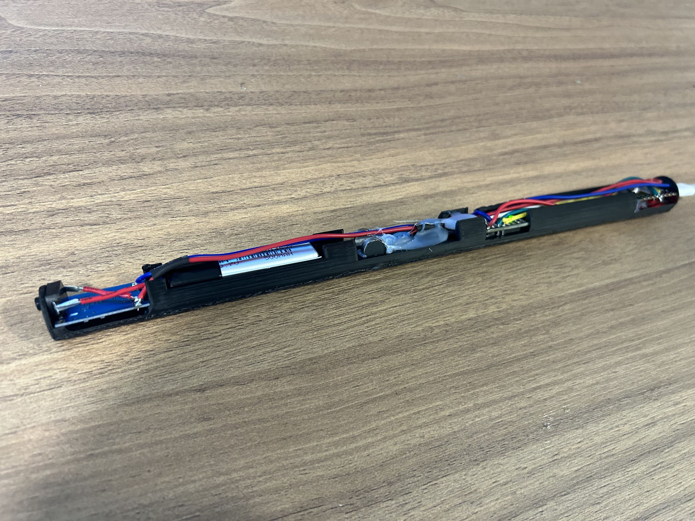
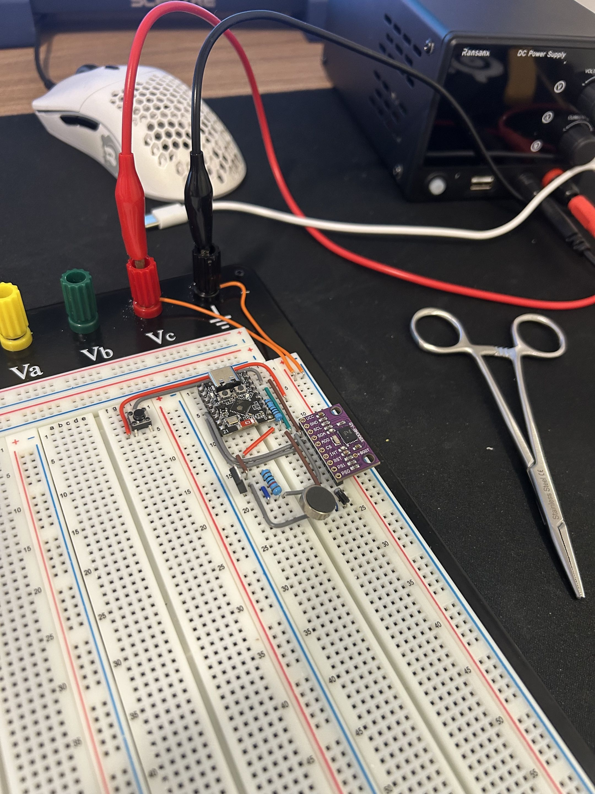
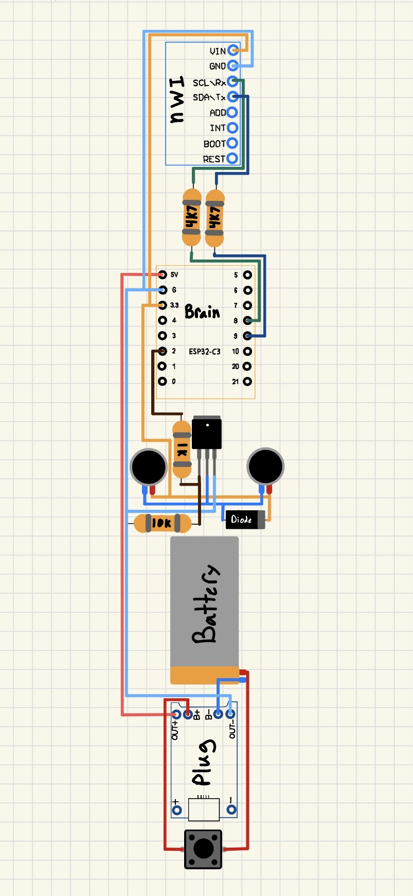
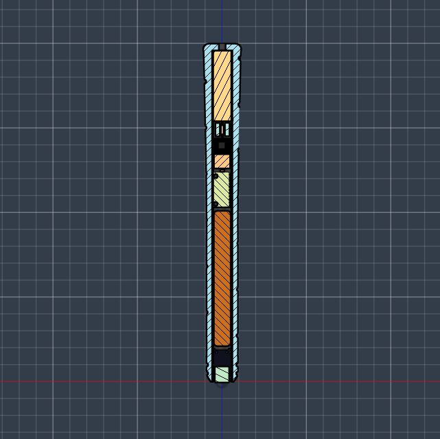
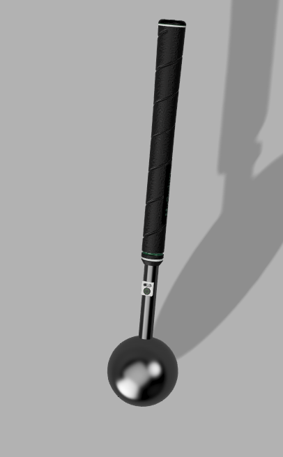
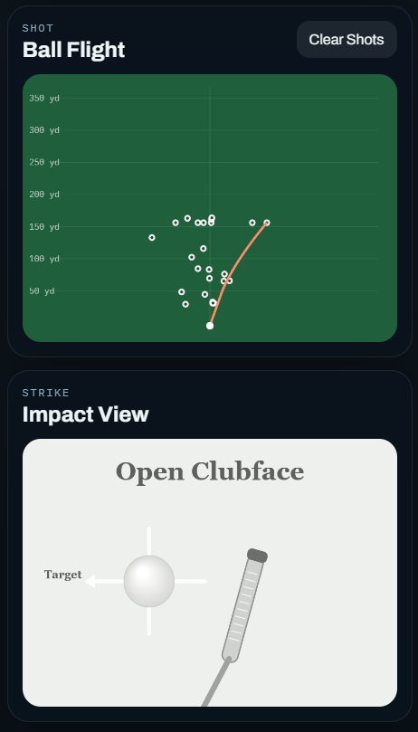

Sheet 07 · Personal · Provisional patent filed
MySwing Training Grip
A weighted golf grip with an IMU inside it that estimates club speed, face orientation and shot shape, and gives haptic tempo feedback through the handle. Electronics, machining, firmware and data, in one part you swing.
- Sensing
- IMU inside the grip
- Controller
- ESP32-C3 Mini
- Link
- Bluetooth Low Energy
- Feedback
- Vibration motor,
tempo cue - Body
- Machined shaft and
weighted mass, epoxied - Interface
- Web app over BLE
- IP
- Provisional patent filed
- Status
- Working; visualisation
in progress
01The idea
I have played golf most of my life and I design and build clubs, so I already had an informed opinion about what a swing should feel like. The question was whether I could capture that with a sensor inside a grip rather than a launch monitor pointed at a ball.
It turned into a project that touches everything: sensor selection, circuit design, machining, firmware, signal processing and a user interface. It now estimates club speed, carry distance and shot shape consistently enough to distinguish between deliberately different swings. The part still open is the visualisation, which has been harder than everything else put together.

02Electronics and sensor selection
I started on a breadboard with a deliberately unambitious goal: rotate a cube on a screen from IMU data. Nothing to do with golf, everything to do with proving the sensor pipeline end to end before adding anything on top of it. Once that was stable I added the vibration motor and built out the full circuit around an ESP32-C3 with motor protection.
The sensor itself was the real problem. Plenty of IMUs behave perfectly at the speeds you get waving a breadboard around, and then saturate or go unusable the moment you actually swing. I went through several before finding one that stayed coherent under real swing accelerations and was still small enough to fit inside a shaft.


Failure Sensor selection
Everything works at bench speed
Several IMUs passed every test I could do at a desk and then produced garbage at swing speed: clipping on the accelerometer, gyro range exceeded, or output that simply stopped tracking. The bench does not reproduce the load case.
Fix
Test at the actual operating envelope before designing packaging around a component. I now pick sensors by full-scale range first and convenience second.
03Packaging and physical build
The first housing was printed, purely to work out how the battery, board, wiring and motor could coexist without becoming a tangle. Once the arrangement made sense I moved to metal, because a training aid that feels like a toy does not get used.
The shaft and the weighted mass were turned on a lathe and threaded together, then reinforced with epoxy so they cannot back off under repeated impact loading. Adding real mass at the end changed the project more than any electrical decision did, since the swing feels like a club, so the motion is closer to a real swing, so the data means something.



04Turning motion into meaning
Collecting data was easy. Making it mean something was the project.
I use pitch and roll to estimate clubface orientation and acceleration to segment the swing into phases. Around impact, small changes in orientation tell you whether the face is open or closed, which is what determines shot shape. Getting there meant recording roughly thirty swings, logging thousands of lines, and comparing patterns against what I knew each swing had actually done.
It is not a first-principles physics model. It is pattern based, tuned against ground truth I generated myself, and it is honest about that. It distinguishes swing types reliably, which was the requirement.

05Interface
I started building the interface in Swift and switched to a web app so I could iterate faster. The ESP32 streams over Bluetooth Low Energy and the page handles processing and display, which meant I could see what a swing looked like instead of reading numbers off a serial monitor.
The 3D visualisation is the open problem. The IMU only knows what the grip is doing, and I want to show a whole swing, which means either estimating the rest of the body from one sensor or driving a predefined motion with the measurements I do have. Currently I use a base swing model and link the club motion to real data. It is rough, and it is the next thing I would fix.
06Provisional patent
After the first full prototype worked I filed a provisional patent: Portable weighted smart golf swing training grip with embedded motion tracking and haptic tempo feedback.
I am not pushing this as a product right now, but going through the process was worth it on its own. Writing claims forces you to state precisely what is novel about your thing, and that is a clarifying exercise for the engineering as much as for the filing.